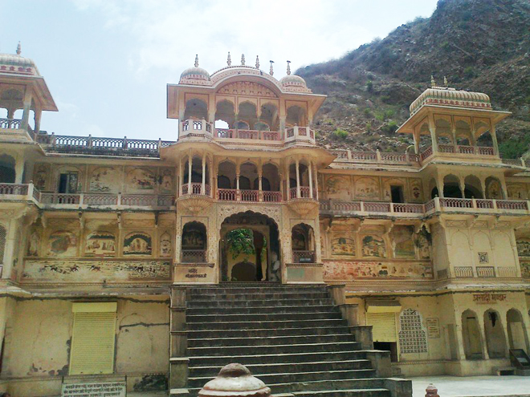
.
Galtaji is an ancient Hindu pilgrimage about 10km away from Jaipur. The site consists of a series of temples built into a narrow pass in the Aravalli Hills. A natural spring emerges high on the hills and flows downward, filling a series of sacred kunds (water tanks) in which pilgrims bathe. Visitors and pilgrims can ascend the crevasse, continuing past the highest water pool to a hilltop temple from there are views of Jaipur spread out across the valley floor. It is believed that a saint named Galav lived here, practiced meditation and did tapasya (penance).
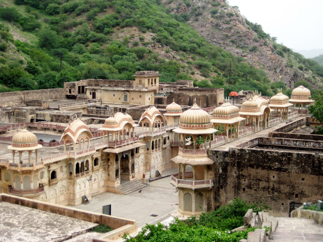
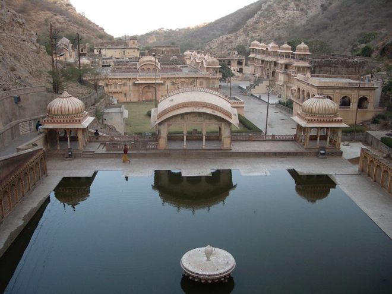
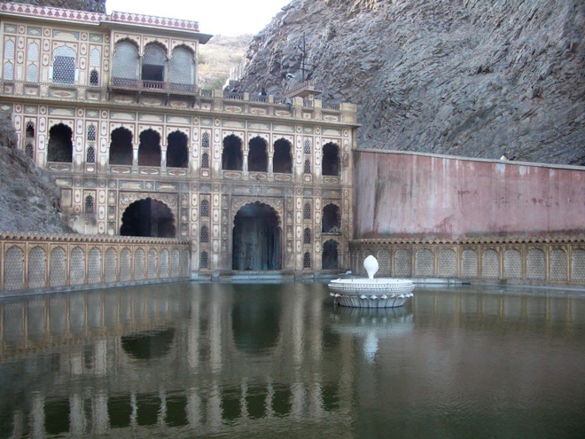
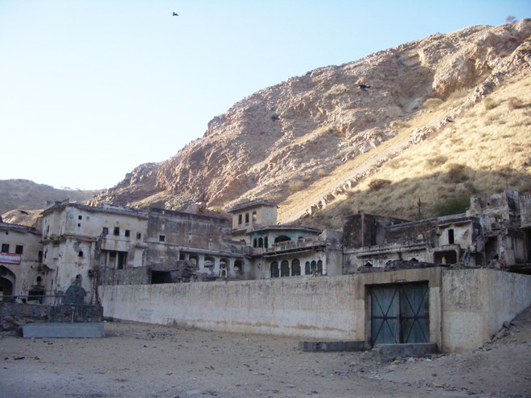
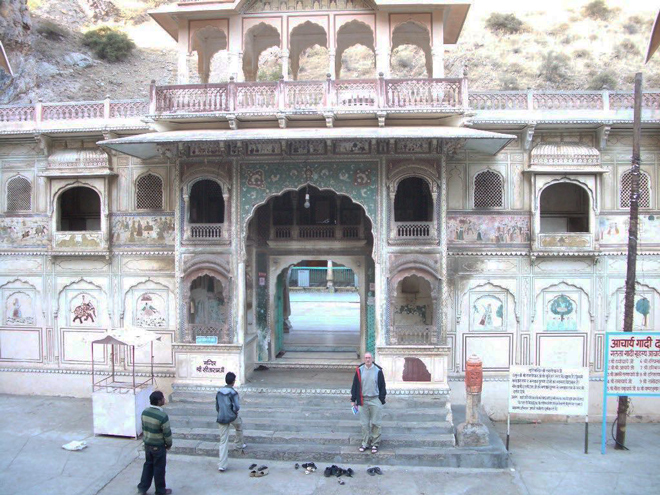
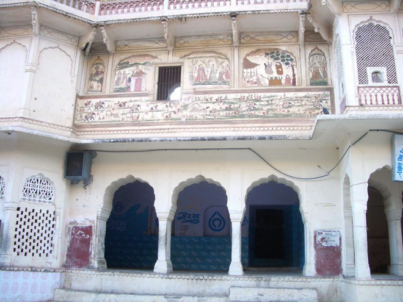
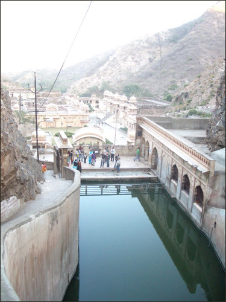
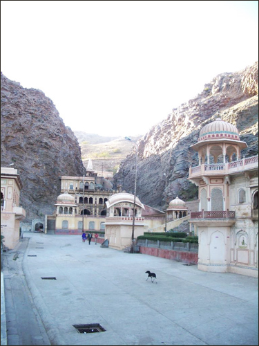
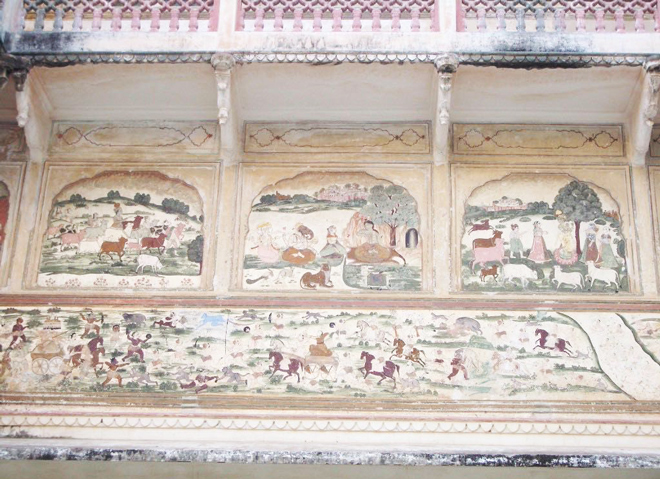
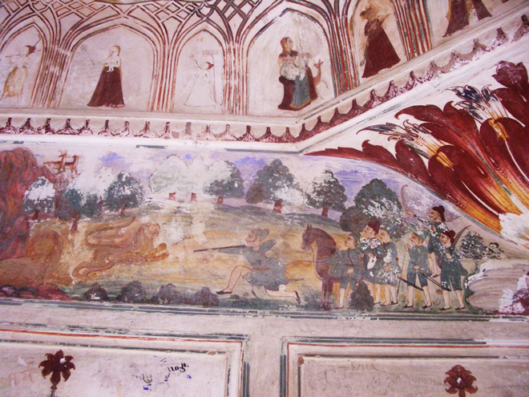
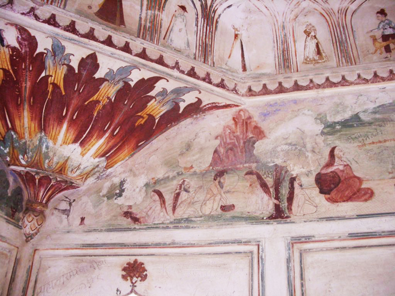
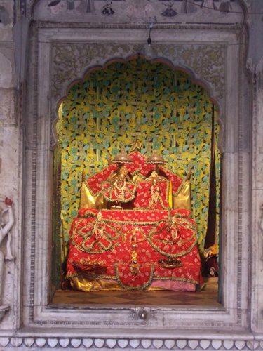
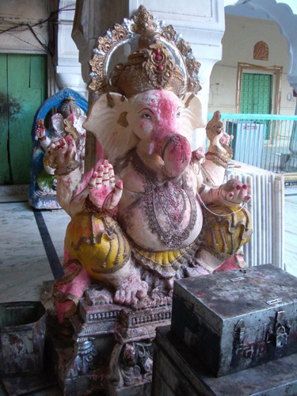
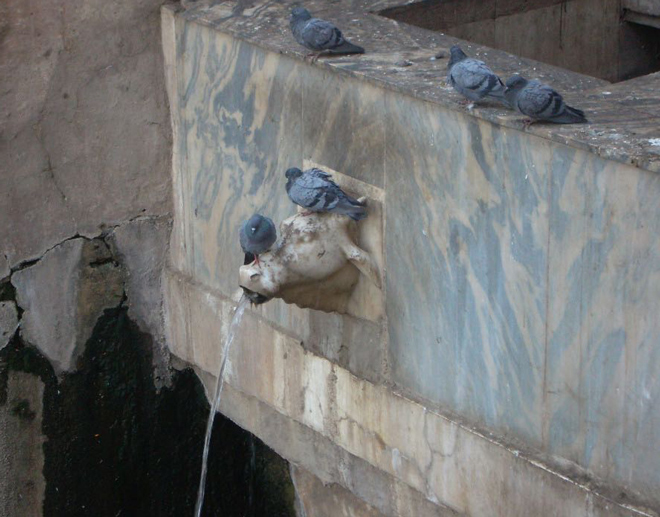
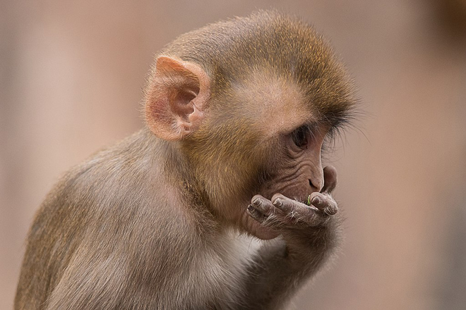
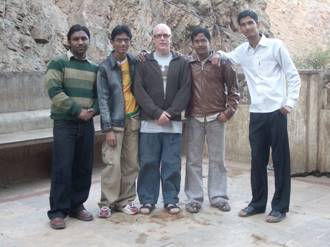